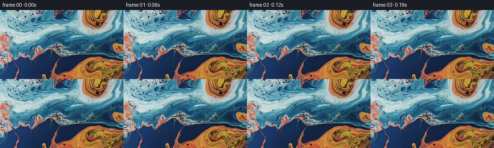
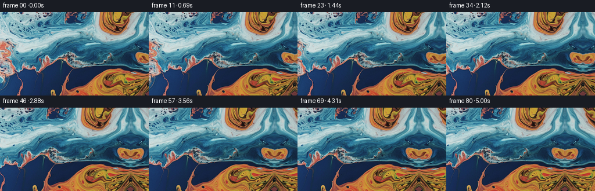
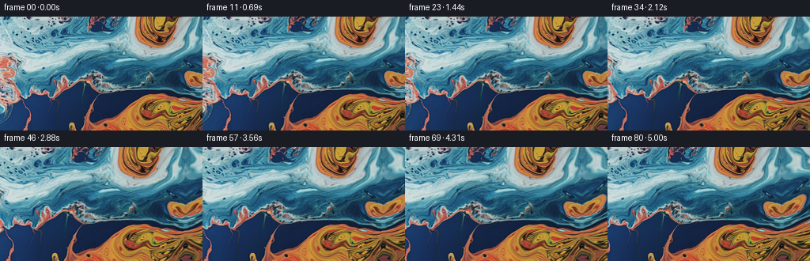
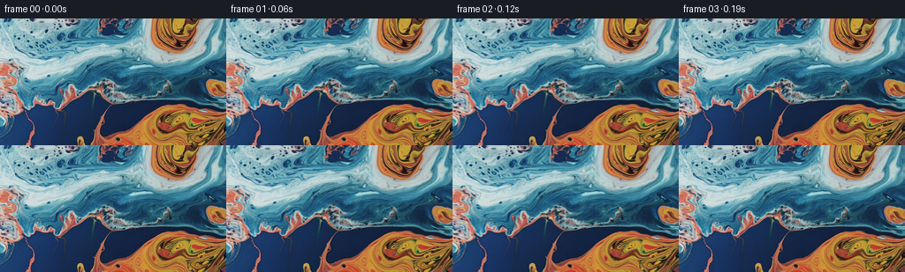
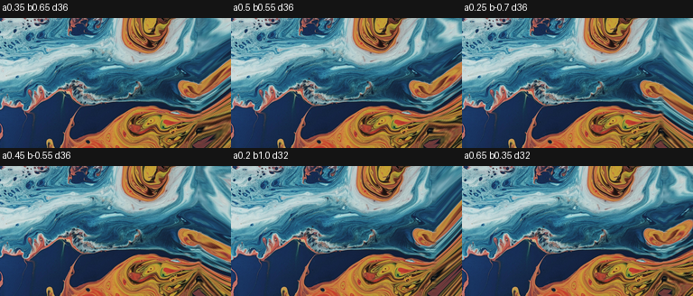
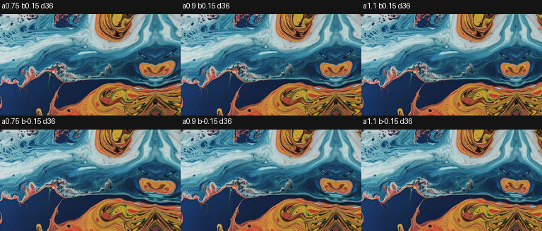
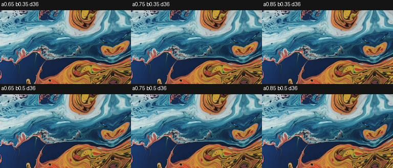

← 本轮 smoke 总览traex/GPT-5.6-Sol · 0002_s1
vision-agent · 256×144 · 16.0 FPS · 81 帧 · 状态 complete · 输出 tokens 10557
原始任务a close up of a blue and orange liquid, camera pans right
当前保存结果
已保存候选与代码修改
这里按时间展示外部捕获的候选，每份均可单独播放。保存新版本不等于完成视觉检查；下方工具证据记录实际看过的图。
候选 01 · 2026-11-09T00:36:05.548291+00:00 · 点开播放与检查图
inspection.png

transition_check.png

代码变化
--- 上一保存版本
+++ 本次保存版本
@@ -0,0 +1,114 @@
+"""Generate the requested image-to-video sequence.
+
+The shot is treated as a close macro view of a stationary sheet of marbled
+liquid. A small, smooth rightward camera translation reveals a continuation
+of the liquid beyond the supplied image. The continuation is made by flowing
+pixels near the right edge through a gently curved coordinate field; this
+keeps the fine paint filaments coherent and avoids inventing unrelated forms.
+"""
+
+from pathlib import Path
+
+import cv2
+import numpy as np
+from PIL import Image
+
+import artifact_io
+
+
+WIDTH = 256
+HEIGHT = 144
+N_FRAMES = 81
+PAN_DISTANCE = 52.0
+
+
+def make_panorama(source: np.ndarray) -> np.ndarray:
+ """Extend the source to the right with a seamless liquid-like flow."""
+ extra = 62
+ pano_w = WIDTH + extra
+ yy, xx = np.mgrid[0:HEIGHT, 0:pano_w].astype(np.float32)
+
+ # The original part is copied later without resampling. For the newly
+ # revealed area, trace into nearby source paint. At the join d=0, the map
+ # is exactly (255, y); displacements grow gradually away from the join.
+ d = np.maximum(xx - (WIDTH - 1), 0.0)
+ p = d / float(extra + 1)
+
+ # Reflection provides a natural continuation of structures cut by the
+ # edge (especially the orange islet). A low-frequency flow bends it so
+ # that the extension does not read as a rigid mirror.
+ bend_x = (
+ 3.4 * p * p * np.sin(yy * 0.071 + 0.35)
+ + 1.8 * p * np.sin(d * 0.115 + yy * 0.023)
+ )
+ map_x = (WIDTH - 1) - 0.91 * d + bend_x
+
+ bend_y = p * (
+ 5.0 * np.sin(yy * 0.047 + 0.7)
+ + 2.1 * np.sin(d * 0.10 - yy * 0.026)
+ )
+ map_y = yy + bend_y
+
+ extension = cv2.remap(
+ source,
+ map_x.astype(np.float32),
+ map_y.astype(np.float32),
+ interpolation=cv2.INTER_CUBIC,
+ borderMode=cv2.BORDER_REFLECT_101,
+ )
+
+ panorama = extension
+ panorama[:, :WIDTH] = source
+
+ # One narrow, feathered band suppresses any derivative kink at the edge
+ # while retaining the exact source pixels everywhere in the first view.
+ # (Only pixels outside the original frame are changed.)
+ for j in range(1, 5):
+ x = WIDTH - 1 + j
+ a = j / 5.0
+ edge = source[:, WIDTH - 1].astype(np.float32)
+ val = panorama[:, x].astype(np.float32)
+ panorama[:, x] = np.clip((1.0 - a) * edge + a * val, 0, 255).astype(np.uint8)
+ return panorama
+
+
+def render_frames(source: np.ndarray) -> np.ndarray:
+ panorama = make_panorama(source)
+ out = np.empty((N_FRAMES, HEIGHT, WIDTH, 3), dtype=np.uint8)
+ grid_y, grid_x = np.mgrid[0:HEIGHT, 0:WIDTH].astype(np.float32)
+
+ for i in range(N_FRAMES):
+ if i == 0:
+ # Contract requirement: no conversion or interpolation here.
+ out[i] = source
+ continue
+
+ u = i / float(N_FRAMES - 1)
+ # Nearly uniform pan with a short ease-in/ease-out, so it feels like a
+ # deliberate camera move rather than a texture sliding mechanically.
+ eased = u - 0.055 * np.sin(2.0 * np.pi * u)
+ offset_x = PAN_DISTANCE * eased
+
+ map_x = (grid_x + offset_x).astype(np.float32)
+ frame = cv2.remap(
+ panorama,
+ map_x,
+ grid_y,
+ interpolation=cv2.INTER_CUBIC,
+ borderMode=cv2.BORDER_REFLECT_101,
+ )
+ out[i] = frame
+ return out
+
+
+def main() -> None:
+ case_dir = Path(__file__).resolve().parent
+ source = np.asarray(Image.open(case_dir / "first_frame.png").convert("RGB"), dtype=np.uint8)
+ if source.shape != (HEIGHT, WIDTH, 3):
+ raise ValueError(f"Unexpected first-frame shape: {source.shape}")
+ frames = render_frames(source)
+ artifact_io.save(frames, case_dir)
+
+
+if __name__ == "__main__":
+ main()
候选 02 · 2026-11-09T00:38:10.491258+00:00 · 点开播放与检查图
inspection.png

transition_check.png

代码变化
--- 上一保存版本
+++ 本次保存版本
@@ -19,7 +19,7 @@
WIDTH = 256
HEIGHT = 144
N_FRAMES = 81
-PAN_DISTANCE = 52.0
+PAN_DISTANCE = 36.0
def make_panorama(source: np.ndarray) -> np.ndarray:
@@ -34,20 +34,20 @@
d = np.maximum(xx - (WIDTH - 1), 0.0)
p = d / float(extra + 1)
- # Reflection provides a natural continuation of structures cut by the
- # edge (especially the orange islet). A low-frequency flow bends it so
- # that the extension does not read as a rigid mirror.
+ # Trace diagonally back into nearby paint. The simultaneous vertical and
+ # horizontal displacement continues the angled streams at the edge and,
+ # unlike a direct reflection, avoids producing bilateral shapes.
bend_x = (
3.4 * p * p * np.sin(yy * 0.071 + 0.35)
+ 1.8 * p * np.sin(d * 0.115 + yy * 0.023)
)
- map_x = (WIDTH - 1) - 0.91 * d + bend_x
+ map_x = (WIDTH - 1) - 0.65 * d + bend_x
bend_y = p * (
5.0 * np.sin(yy * 0.047 + 0.7)
+ 2.1 * np.sin(d * 0.10 - yy * 0.026)
)
- map_y = yy + bend_y
+ map_y = yy + 0.35 * d + bend_y
extension = cv2.remap(
source,
候选 03 · 2026-11-09T00:38:15.166361+00:00 · 点开播放与检查图
inspection.png

transition_check.png

代码变化
代码未变化；重新保存了产物。
可观测工具行为
命令 1 · 2026-11-09T00:34:31.691118+00:00/bin/bash -lc "cat GENERATION_RULES.md && printf '\\n--- PROMPT ---\\n' && cat prompt.txt"
exit 0 命令 2 · 2026-11-09T00:34:31.961955+00:00/bin/bash -lc "find . -maxdepth 2 -type f -printf '%p\\n' | sort && printf '\\n--- TOOLS ---\\n' && command -v ffmpeg && command -v python3 && python3 - <<'PY'
from PIL import Image
im=Image.open('first_frame.png')
print(im.mode, im.size)
PY"exit 1 命令 3 · 2026-11-09T00:34:40.004962+00:00/bin/bash -lc "cat task_spec.json && printf '\\n--- artifact_io ---\\n' && sed -n '1,240p' artifact_io.py"
exit 0 命令 4 · 2026-11-09T00:34:40.660777+00:00/bin/bash -lc "python3 - <<'PY'
import importlib.util
mods=['numpy','PIL','cv2','scipy','imageio']
for m in mods:
try:
x=__import__(m); print(m,'ok',getattr(x,'__version__',''))
except Exception as e: print(m,'NO',type(e).__name__)
PY
for x in ffmpeg ffprobe; do command -v \""'$x" || true; done'
exit 0 命令 5 · 2026-11-09T00:35:37.313568+00:00/bin/bash -lc "python3 generate.py && python3 - <<'PY'
import json
from pathlib import Path
import numpy as np
from PIL import Image
p=Path('.')
spec=json.loads(Path('task_spec.json').read_text())
a=np.stack([np.asarray(Image.open(p/'frames'/f'{i:02d}.png').convert('RGB')) for i in range(spec['frames'])])
src=np.asarray(Image.open('first_frame.png').convert('RGB'))
print('shape/dtype:', a.shape, a.dtype)
print('frame0 identical:', np.array_equal(a[0],src), 'maxdiff:', np.abs(a[0].astype(int)-src.astype(int)).max())
print('mean adjacent abs diffs:', np.round(np.abs(np.diff(a.astype(np.int16),axis=0)).mean(axis=(1,2,3))[[0,1,39,78,79]],3))
print('unique frames:', len({x.tobytes() for x in a}))
print('outputs:', [x.name for x in p.iterdir() if x.name in ('pixels.npz','inspection.png','transition_check.png','index.html')])
PY"exit 1 命令 6 · 2026-11-09T00:35:58.360211+00:00/bin/bash -lc "python3 generate.py && python3 - <<'PY'
import json
from pathlib import Path
import numpy as np
from PIL import Image
p=Path('.')
spec=json.loads(Path('task_spec.json').read_text())
a=np.stack([np.asarray(Image.open(p/'frames'/f'{i:02d}.png').convert('RGB')) for i in range(spec['frames'])])
src=np.asarray(Image.open('first_frame.png').convert('RGB'))
print('shape/dtype:', a.shape, a.dtype)
print('frame0 identical:', np.array_equal(a[0],src), 'maxdiff:', np.abs(a[0].astype(int)-src.astype(int)).max())
print('mean adjacent abs diffs:', np.round(np.abs(np.diff(a.astype(np.int16),axis=0)).mean(axis=(1,2,3))[[0,1,39,78,79]],3))
print('unique frames:', len({x.tobytes() for x in a}))
print('outputs:', [x.name for x in p.iterdir() if x.name in ('pixels.npz','inspection.png','transition_check.png','index.html')])
PY"exit 0 命令 7 · 2026-11-09T00:36:30.761458+00:00/bin/bash -lc "cat > .tmp/test_ext.py <<'PY'
import numpy as np, cv2
from PIL import Image,ImageDraw
src=np.asarray(Image.open('first_frame.png').convert('RGB'))
h,w=src.shape[:2]; extra=70
variants=[]
for a,b,dist in [(.35,.65,36),(.50,.55,36),(.25,-.7,36),(.45,-.55,36),(.20,1.0,32),(.65,.35,32)]:
yy,xx=np.mgrid[0:h,0:w+extra].astype(np.float32); d=np.maximum(xx-(w-1),0); p=d/(extra+1)
mx=(w-1)-a*d + 2.0*p*np.sin(yy*.07)+1.4*p*np.sin(d*.15+yy*.03)
my=yy+b*d + p*(3*np.sin(yy*.047+.7)+1.8*np.sin(d*.1-yy*.026))
ext=cv2.remap(src,mx.astype('float32'),my.astype('float32'),cv2.INTER_CUBIC,borderMode=cv2.BORDER_REFLECT_101); ext[:,:w]=src
for j in range(1,5):
x=w-1+j; al=j/5; ext[:,x]=np.clip((1-al)*src[:,-1]+al*ext[:,x],0,255)
gx,gy=np.meshgrid(np.arange(w,dtype='float32')+dist,np.arange(h,dtype='float32'))
frame=cv2.remap(ext,gx,gy,cv2.INTER_CUBIC,borderMode=cv2.BORDER_REFLECT_101)
variants.append((f'a{a} b{b} d{dist}',frame))
sheet=Image.new('RGB',(w*3,(h+20)*2),(20,20,20)); dr=ImageDraw.Draw(sheet)
for i,(t,f) in enumerate(variants):
x=(i%3)*w;y=(i//3)*(h+20); dr.text((x+3,y+2),t); sheet.paste(Image.fromarray(f),(x,y+20))
sheet.save('.tmp/variants.png')
PY
python3 .tmp/test_ext.py"exit 0 命令 8 · 2026-11-09T00:36:56.144314+00:00/bin/bash -lc "python3 - <<'PY'
p='.tmp/test_ext.py'
s=open(p).read(); s=s.replace(\"[(.35,.65,36),(.50,.55,36),(.25,-.7,36),(.45,-.55,36),(.20,1.0,32),(.65,.35,32)]\",\"[(.75,.15,36),(.9,.15,36),(1.1,.15,36),(.75,-.15,36),(.9,-.15,36),(1.1,-.15,36)]\")
open(p,'w').write(s)
PY
python3 .tmp/test_ext.py"
exit 0 命令 9 · 2026-11-09T00:37:13.765628+00:00/bin/bash -lc "python3 - <<'PY'
p='.tmp/test_ext.py';s=open(p).read();start=s.index('for a,b,dist in '); end=s.index(':\\n yy,xx',start); s=s[:start]+\"for a,b,dist in [(.65,.35,36),(.75,.35,36),(.85,.35,36),(.65,.5,36),(.75,.5,36),(.85,.5,36)]\"+s[end:];open(p,'w').write(s)
PY
python3 .tmp/test_ext.py"exit 0 命令 10 · 2026-11-09T00:38:08.540761+00:00/bin/bash -lc "python3 generate.py && python3 - <<'PY'
import json
from pathlib import Path
import numpy as np
from PIL import Image
spec=json.loads(Path('task_spec.json').read_text())
a=np.stack([np.asarray(Image.open(f'frames/{i:02d}.png').convert('RGB')) for i in range(spec['frames'])])
s=np.asarray(Image.open('first_frame.png').convert('RGB'))
assert a.shape==(81,144,256,3) and a.dtype==np.uint8
assert np.array_equal(a[0],s)
with np.load('pixels.npz') as z:
p=z['pixels']; assert p.shape==(144,256,81)
rgb=np.stack([(p[:,:,0]>>16)&255,(p[:,:,0]>>8)&255,p[:,:,0]&255],-1).astype('uint8')
assert np.array_equal(rgb,s)
d=np.abs(np.diff(a.astype(np.int16),axis=0)).mean(axis=(1,2,3))
print('PASS: shape',a.shape,'dtype',a.dtype,'first_exact',np.array_equal(a[0],s))
print('motion mean/min/max adjacent MAD:',float(d.mean()),float(d.min()),float(d.max()))
print('files:',Path('pixels.npz').stat().st_size,'bytes pixels.npz;',len(list(Path('frames').glob('*.png'))),'frames')
PY"exit 0 命令 11 · 2026-11-09T00:38:17.891607+00:00/bin/bash -lc 'python3 -m py_compile generate.py && git status --short 2>/dev/null || true'
exit 0 视觉工具实际返回图片 1

视觉工具实际返回图片 2

视觉工具实际返回图片 3

视觉工具实际返回图片 4

视觉工具实际返回图片 5

视觉工具实际返回图片 6

视觉工具实际返回图片 7

保存候选 3 份；完成命令 11 次；可验证图片返回 7 张。原始 API 响应与完整日志保留在本地。